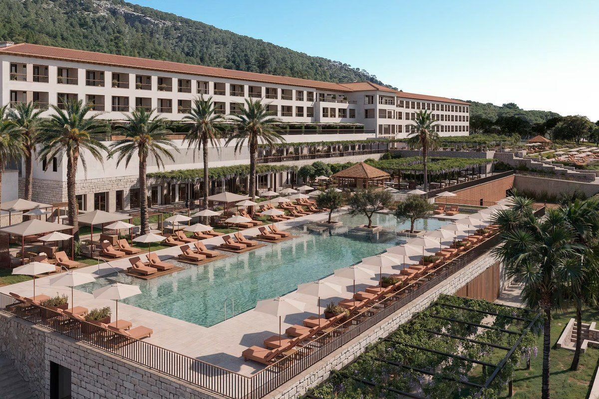

Hotelería de lujo
Hotel Formentor
Four Seasons
Rehabilitación integral de un hotel histórico para su reapertura bajo bandera Four Seasons. Instalaciones completas en habitaciones, zonas comunes, restauración, spa y áreas técnicas, con las exigencias de estándar y fiabilidad de una operadora de lujo internacional.
- Coordinación MEP entre disciplinas y con arquitectura
- Seguimiento de ejecución y resolución de interferencias
- Control de subcontratas y validación técnica de material